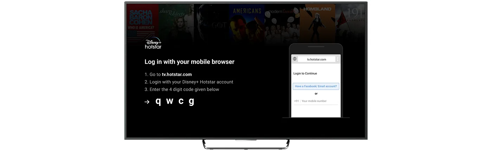
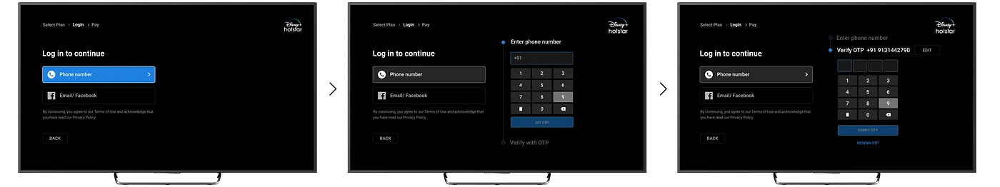
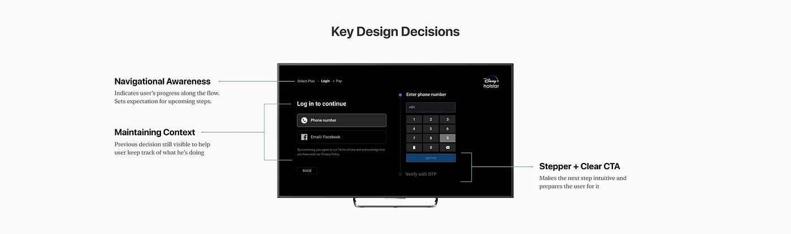
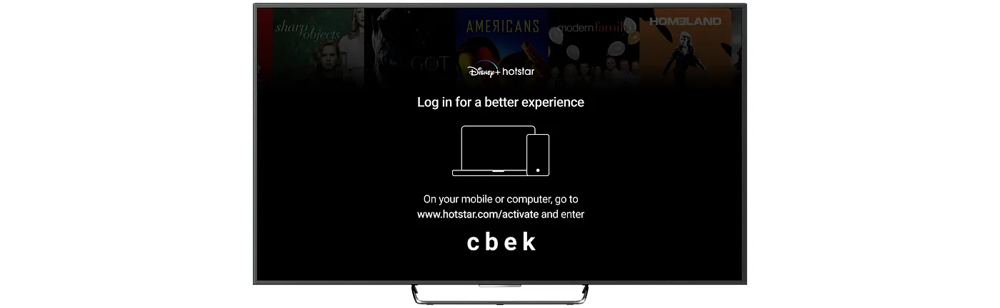
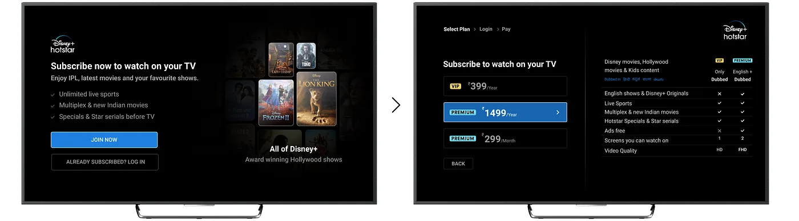
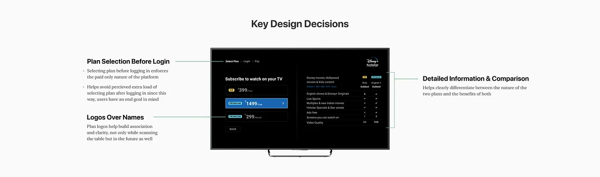
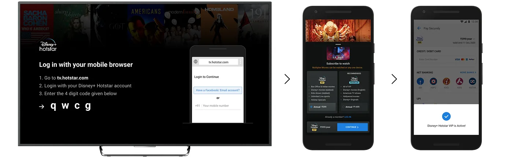
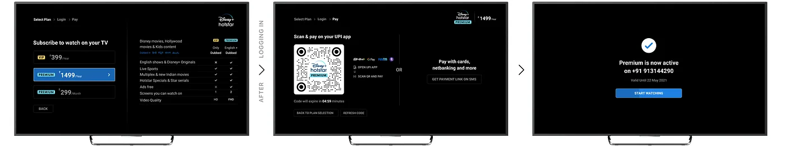

The TV was a second screen with first-screen watch time
Disney+ Hotstar had more than 28 million paid users in April 2021, and its app ran on most living-room platforms. But the TV app had always been a secondary node: login and payment happened on mobile or web.
HypothesisPeople watching on smart TVs can afford a subscription. Making the app subscriber-only on these devices will increase acquisition without hurting retention.
Willing to pay, unable to work out how
The data backed the first half of the bet. More than four times as many people had active subscriptions on living-room devices as on Android and iOS phones. Most free users on TV were watching live news and free daily serials.
We talked to free users on TVs about what stopped them subscribing.
I wanted to subscribe one day while wanting to watch a paid movie on my TV, but I couldn't figure out how to. I tried but soon I lost my interest.
Aman, 35, working professional
I actually have a subscription, however, I could never figure out how to log in to the TV. I only watch the news anyway so it's fine.
Mani, 61, retired
My son has set this up for me and his father. Every time we face a problem, we just call him up and he tells us what to do.
Kamala, 71, retired
I never felt the need for a subscription. I usually watch news on TV and that is free. I think my kids have a subscription but they don't watch the TV.
Rajesh, 45, self-employed
Two of the four wanted, or already had, a subscription. The TV just didn't let them use it.1The other twoKamala and Rajesh were the people the "without hurting retention" half of the hypothesis was about: households that watch free news and serials and might simply leave. That narrowed the work to three problems:
A complicated, incoherent login flow that depended on another device.
Nothing on the TV made the case for subscribing.
No way to choose a plan and pay from the TV.
Stop sending people to a browser
How do you sign in on a device with no keyboard?
A web link and a code
Open a link on your phone or laptop, sign in there, then type the code shown on the TV.
Three devices' worth of steps for one login, and the place people dropped off.

Your phone number, on the TV
Enter your phone number on the TV, get an OTP on your phone, and you're in. Email and Facebook stay as fallbacks.
Everyone on the couch has their phone. Nobody wants to open a website.


Show the shows before asking for money
The old landing page explained how to log in and nothing else: no reason to care, no plans to compare. The new one leads with show cards and clear benefits, then a high-contrast, side-by-side plan comparison.



Pay with the phone you already have out
TVs didn't support payment, so people had to leave and find checkout on mobile or web themselves. Now you choose a plan on the TV and go straight to checkout: get a payment link by SMS, or scan a UPI QR code on the screen with any UPI app.


Three steps, each one earning the next
Making an app subscriber-only is hard to undo. We shipped in three phases, watched user response and conversion at each, and only moved on when the numbers held.2The gateThe plan noted that phase 3 would only go ahead if phase 2 had a positive impact.
More people logged in, and more of them paid
Launched on Android TV first:
- Paid conversions
- +35% Free-to-paid conversions on Android TV.
- Login rate
- +600% On living-room screens.
What I'd keep, and what I'd change
The blocker was effort, not money.
The hypothesis was about whether people could afford it. The interviews said many already wanted it, or already paid for it. A 600% jump in logins is what removing effort looks like.
Stage anything you can't take back.
A paywall is a one-way door for some users. Shipping it in phases, each with a gate, made a risky change a series of small, reversible ones.
Measure the other half of the hypothesis as closely as the first. We reported conversions and logins. Households like Kamala's and Rajesh's, watching free news on the TV, were the retention risk, and I'd want a clear view of where they went from the first phase.